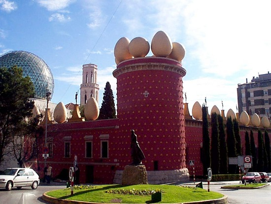
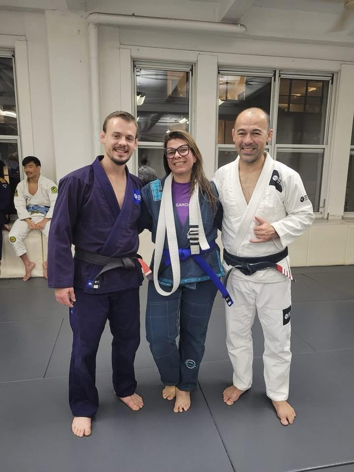
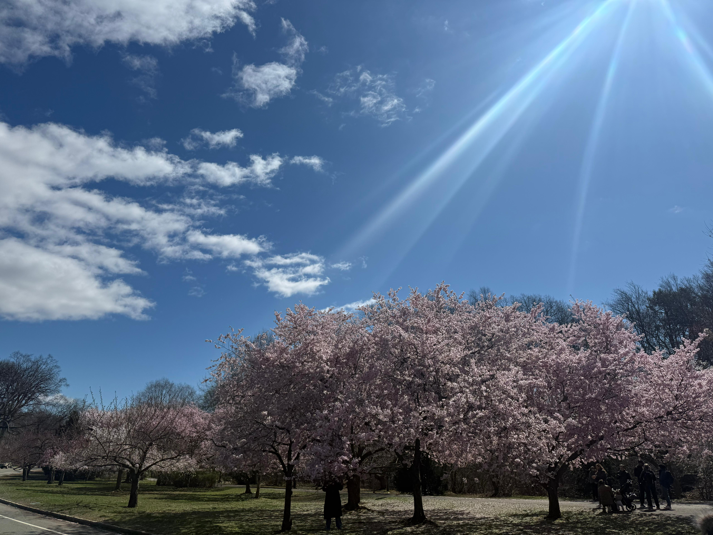
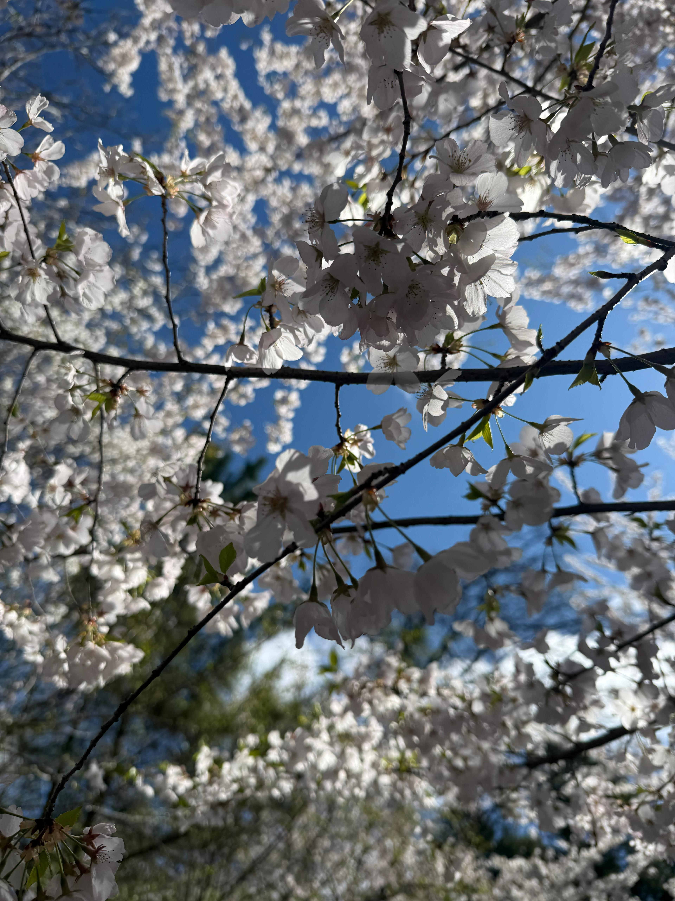

Miscellaneous

Aside from mathematics, I love reading literature, philosophy, biographies, art, and learning about different cultures. I practice Brazilian Jiu-Jitsu and enjoy exploring the city.
“What stands in the way becomes the way.”

I love traveling whenever possible. I try to stay in touch with nature.


Community Volunteering
I also volunteer in New York City, including projects with New York Cares and City Harvest focused on food access, community service, and environmental sustainability.